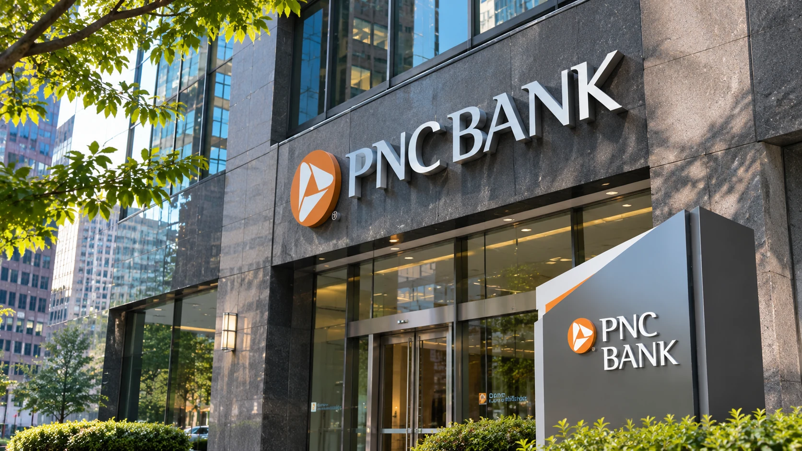

PNC and Coinbase Launch USDC Payments Pilot for Corporate Banking Customers
The new service lets selected PNC business clients receive dollar-backed stablecoins over Ethereum and convert them automatically into dollars held in a bank account, testing a practical link between blockchain settlement and corporate treasury operations.

PNC Bank and Coinbase announced on Monday, November 9, that they are introducing a limited service allowing eligible corporate and institutional banking clients to receive payments in USDC, a U.S. dollar-backed stablecoin, through the Ethereum blockchain. Incoming tokens will be automatically converted into U.S. dollars and deposited into a designated PNC bank account, the companies said. The initial offering is a pilot rather than a general rollout, but it represents a concrete example of a traditional U.S. bank connecting blockchain payments to conventional cash management.
The announcement matters because receiving a digital token is only one step in a commercial payment. Businesses also need funds reconciled, converted where appropriate, recorded and available through banking relationships that their finance departments already use. PNC and Coinbase are trying to bridge that operational gap without requiring the receiving company to maintain the incoming balance as USDC.
How the payment flow works
Under the model described by PNC, an eligible client can accept a payment in USDC over Ethereum. Coinbase provides the infrastructure through its payment products and application programming interfaces, while PNC handles the banking side of the relationship. The amount received is converted on a one-for-one basis into U.S. dollars and credited to the client's designated PNC deposit account.
This structure differs from a merchant simply holding stablecoins in an externally managed wallet. The receiving organization sees dollars in its banking account rather than needing to hold a token indefinitely. It could therefore fit more naturally with existing treasury systems, bank reporting and cash-management processes, although the companies have not published sufficient operational detail to determine how integration, fees and reconciliation work for every customer.
PNC said the service is being offered to selected Corporate & Institutional Banking clients. It did not provide a comprehensive customer list, transaction-volume forecast or timetable for broad availability. The companies also did not claim that the pilot covers every stablecoin or every blockchain. The explicitly described payment asset is USDC and the identified network is Ethereum.
Why companies are interested in stablecoins
A stablecoin is a digital token intended to maintain a defined value against another asset, often a national currency. USDC is designed to track the U.S. dollar. Stablecoins can be transferred through supported blockchain networks outside many of the conventional operating windows of bank payment infrastructure. That characteristic has attracted interest from businesses that operate across borders or need to move funds between counterparties in different time zones.
Faster movement on a blockchain does not guarantee that the complete business payment is instant. Customer verification, sanctions screening, conversion, account crediting and internal controls can introduce processing time. Network congestion, technical failures and compliance reviews are additional practical considerations. Neither the PNC release nor the Coinbase announcement provides a firm end-to-end settlement time or universal cost saving, so it would be misleading to promise either.
The attraction for corporate treasurers is therefore operational flexibility rather than the prospect of appreciation in a cryptocurrency. Companies generally need predictable purchasing power, reliable records and access to ordinary bank deposits. An arrangement that converts a stablecoin into dollars can give them exposure to a new payment route while limiting the time they hold the token themselves.
A bank-crypto partnership with an established history
The pilot extends an existing relationship between the two companies. PNC previously selected Coinbase infrastructure to support digital-asset services for certain clients, while the bank also agreed to provide banking services to Coinbase. Monday's announcement adds business payment acceptance to that collaboration. The distinction is important: the new service is not the same as cryptocurrency brokerage for private banking customers and is not a launch of crypto trading for all PNC account holders.
The new arrangement also comes on a day when Coinbase disclosed final federal approval for a national trust company charter intended for institutional custody. TTN Finance examined that regulatory development in our Coinbase charter report. The bank's USDC payments pilot and Coinbase's custody charter are separate developments; the announcements do not establish that one legal authorization directly enabled the other.
USDC is an issued digital asset, not a conventional dollar deposit while it exists on-chain. The stablecoin's reserve structure and the legal position of token holders differ from the protections and claims associated with a bank deposit. In PNC's proposed flow, the receiving customer is credited with dollars after conversion, but that does not mean every part of the preceding transfer carries the same safeguards as an insured deposit. Contractual terms, eligibility and the moment of conversion still matter.
The regulatory and risk questions
Traditional financial institutions contemplating stablecoin services must consider anti-money-laundering obligations, sanctions compliance, fraud prevention, operational resilience and third-party technology dependencies. Blockchain transactions may be final in ways that make routine payment mistakes more difficult to reverse. A company must also ensure it is using the intended token, chain and recipient address. PNC's announcement did not provide a complete description of liability arrangements, error handling or eligibility conditions for the pilot.
Those uncertainties do not negate the practical potential of the model. They illustrate why a limited rollout may be useful for a bank seeking operational evidence before wider adoption. PNC described the initiative as a way for selected customers to learn how stablecoin payments might fit into treasury strategies while the institution assesses usefulness and demand.
The broader market backdrop remains uneven. Cryptocurrency prices have been volatile in recent sessions, as described in our report on bitcoin liquidations. But the value proposition of this pilot does not depend principally on bitcoin prices. It depends on whether businesses find the stablecoin-to-bank-deposit process reliable, compliant and economically competitive with existing payment options.
What to watch after the pilot begins
The clearest measures of progress will be whether PNC expands eligibility, adds supported payment routes, publishes evidence of customer adoption and discloses measurable changes in settlement time or operational cost. Banks may also evaluate how incoming transactions are documented for corporate accounting and whether the service integrates into existing treasury-management interfaces. Any claims of large-scale adoption would require supporting numbers that neither company provided on November 9.
PNC and Coinbase have moved beyond a general statement of interest in digital assets to a defined receiving and conversion service for a limited group of banking customers. The pilot offers an observable test of how blockchain payments can connect to regulated financial institutions, while leaving commercial scale, operational performance and broader availability for later evidence.
Sources and documentation
- PNC Bank, “PNC Bank Launches Incoming Stablecoin Payments for Corporate and Institutional Banking Clients,” November 9, 2026: Original source
- Coinbase, “Coinbase and PNC expand partnership to bring stablecoin payment acceptance to corporate clients,” November 9, 2026: Original source
- Reuters, “PNC to offer stablecoin payments to clients in Coinbase partnership,” November 9, 2026: Original source